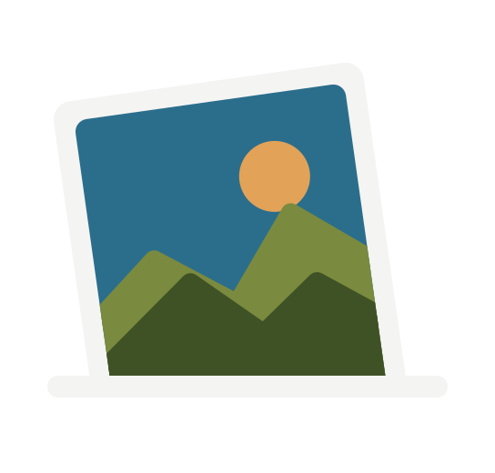

Revela
Exportar
REVELA 400 ▸ 1 ▸ 2 ▸ 3
Revela
Sua foto digital, revelada em filme.
Abrir uma foto
versão 50 · 23/11/2026
ORIGINAL
Usar a mesma edição da foto anterior?
Não
Usar
01
Filmes
02
Ajustes
03
Analógico